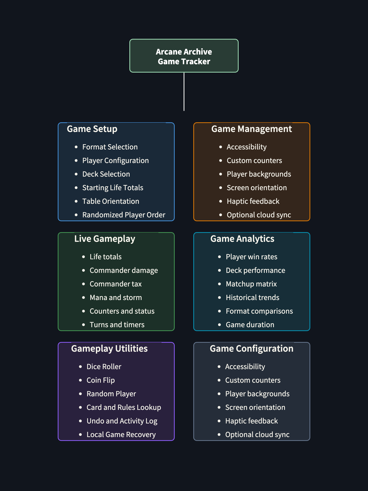

System Architecture and Design¶
Arcane Archive – Backend Architecture¶
Document Status: Draft
Revision: 2026-11-18
Purpose & Scope¶
This document describes the system architecture, design, decisions, components, data model, security requirements, deployment topology, operation requirements, and integration of the Arcane Archive backend. Arcane Archive is a Magic: The Gathering companion application with a React Native, Expo, TypeScript, with a FastAPI REST API.
The backend supports the following features:
- Public card and set data retrieval.
- User authentication and authorization.
- User profile management.
- Card library management.
- Wishlist management.
- Deck building and management.
- Game tracking.
- Integration with Scryfall API for card data and images.
- Mobile-friendly design.
- AI-assisted deck building (planned for future implementation).
See Overview & Installation for more information on how to install and run the backend.
Features¶
| Feature | Scope |
|---|---|
| FastAPI Backend | HTTP routers, pydantic schemas, database models |
| Local user authentication | JWT-based authentication with password hashing and salting |
| Firebase social authentication | OAuth2-based authentication with Google, Facebook, and Apple |
| Simple & Advanced Search | Search for cards by name, set, or other criteria |
| Scryfall API Integration | Bulk downloads, normalization, and database upserts |
| Player Profile Management | User profile management, preferences, and game stats |
| Card Library Management | Manage card collections, wishlists, and sets |
| Wishlist Management | Create, edit, and delete wishlists |
| Deck Builder | Create, edit, and manage decks |
| Card Scanner | Scan cards to add to the user's library |
| Redis Caching | Cache-aside for public card data |
| pgVector & AI Deck Builder (Future) | Store AI-generated card embeddings for semantic search |
| pgBouncer & pgBackRest | Connection pooling and backup/recovery for PostgreSQL |
System Architecture¶
Arcane Archive is designed to be maintainable, scalable, testable, and reliable. Its backend architecture combines SOLID principles, a layered architecture, the repository pattern, transaction management, the adaptor pattern, and dependency injection within a modular monolith.
C4 Level 1 Context View¶

C4 Level 2 Container View¶

C4 Level 3 Component View¶

Architectural Layers¶
- Presentation Layer: FastAPI routers, Pydantic, Request/Response schemas
- Application Layer: Register user, save deck, search cards
- Domain Layer: Card quantity, deck format, ownership rules
- Data Access Layer: User, credentials, card, and deck repositories
- Infrastructure Layer: SQLAlchemy, Redis, Firebase Admin SDK, Scryfall API, pgBouncer, pgBackRest
SOLID Principles¶
- Single Responsibility Principle – Each file has one job (e.g., user_repository only talks to the database).
- Open/Closed Principle – The application is open for extension but closed for modification allowing for future enhancements like adding an AI Deck Service.
- Liskov Substitution Principle – Example: Different auth methods (local and Firebase social auth) can both be used interchangeably with the token schema without affecting the application's behavior.
- Interface Segregation Principle – Instead of one giant repository, I have separated the repositories into smaller, more focused components to only pull in the data they need.
- Dependency Inversion Principle – Services don't create their own database connections but instead ask for them through the dependencies they need.
Architectural Styles & Design Patterns¶
| Category | Selected Pattern |
|---|---|
| Architectural Style | Modular Monolith |
| Architectural Pattern | Layered Architecture |
| Design Principle | Separation of Concerns |
| Persistence Pattern | Repository Pattern & Transaction Management |
| Composition Pattern | Dependency Injection |
| Integration Pattern | Adapter Pattern |
| Caching Pattern | Cache-Aside |
| Data Processing Pattern | ETL Pipeline (Extract, Transform, Load) |
| Resilience Approach | Graceful Degradation |
See References for more information on the design patterns I used in this project.
Alternatives Considered¶
Microservices Architecture
I considered using a microservices architecture for this project, but I decided against it for several reasons:
- Complexity: A microservices architecture would add complexity to the application. I found that a modular monolith is simpler to develop, test, and deploy, debug, and maintain. It also allows me to focus on the core functionality of the application while maintaining separation of concerns.
- Performance: With microservices latency and network communication could potentially introduce performance issues. A modular monolith fits better for Arcane Archive's current requirements, as it eliminates network overhead and allows for faster communication between components.
- Deployment: Using a modular monolith allows me to deploy the application as a single unit, which is simpler and easier to manage.
- Scalability: Microservices can provide better scalability, but I found that a modular monolith can still be scaled horizontally by adding more instances of the application. This is enough to satisfy the current requirements of Arcane Archive. If the application grows in complexity and requires more scalability, I can refactor the application into a microservices architecture in the future.
Decision: I selected a modular monolith because it fits best with the current project requirements, while still allowing me to scale the application in the future if needed. It also provides a balanced approach for maintainability, testability, and performance.
Routes accessing the database directly
I considered having the API routes access the database directly, but I decided against it for several reasons:
- Separation of Concerns: By having the API routes access the database directly, I would be mixing concerns between the API layer and the data access layer. This would make the code harder to maintain and test.
- Testability: By having the API routes access the database directly, it would be harder to test the application. By using a service layer, I can easily mock the service layer for testing without needing to access the database.
- Flexibility: By having the API routes access the database directly, I would be tightly coupling the API layer to the data access layer. This would make it harder to change the data access layer in the future without affecting the API layer. By using a service layer, I can easily change the data access layer without affecting the API layer.
- Reusability: By having the API routes access the database directly, I would be duplicating code across multiple routes. By using a service layer, I can reuse the same service methods across multiple routes, reducing code duplication and improving maintainability.
- Security: By having the API routes access the database directly, I would be exposing the database to potential security vulnerabilities. By using a service layer, I can implement security measures such as input validation and authentication in a centralized location, reducing the risk of security vulnerabilities.
- Maintainability: By having the API routes access the database directly, I would be making the code harder to maintain.
Decision: I selected a layered architecture with application services because it provides a clean separation of concerns between the API layer and the data access layer, while still allowing me to easily test, maintain, scale, and secure the application. It also allows me to reuse code across multiple routes, reducing code duplication and improving maintainability.
Ownership & Responsibility¶
- Scryfall & Wizards of the Coast own the card data and images. Arcane Archive stores the data in a PostgreSQL database.
- Arcane Archive owns the user data and authentication as well as accounts, collections, wishlists, saved decks, and game stats.
- PostgreSQL is the normal local read source.
- Wizards of the Coast own the artwork and MTG intellectual property.
- Users own their personal data and are responsible for managing their account information and privacy settings.
- Redis is a non-authoritative cache and entries may expire.
Domain Model & Database Design¶
The following ERD shows the database design for the Arcane Archive backend.

Card ID and Deck Validation¶
Scryfall identifies cards by their unique Scryfall ID. An Oracle ID is a unique identifier for a card that is used to group all printings of a card together. A card can have multiple printings, and each printing can have a different edition, language, finish, or condition, etc.
Card Data Ingestion¶
The target for Arcane Archive is to ingest Scryfall's bulk data file containing 52,000+ cards. This will allow me to have a high-performance application that will remain sustainable at zero cost. A daily import of the bulk data file will take place to provide the most up-to-date card data.
Card Ingestion Process: 1. Retrieve and Download the bulk data file from Scryfall's API. 2. Validate and normalize the data while preserving Scryfall's identifiers. 3. Upsert the data into the PostgreSQL database, ensuring that existing records are updated and new records are inserted. 4. Publish the updated card data to the Redis cache for real-time updates. 5. Record the latest version, import time, record counts, duration, rejected records, and outcome. 6. Retain the last successful catalog on download, validation, or import failure and alert on staleness.
See Scryfall Bulk Data and API Usage Guide for more information on the bulk data file format.
Local-First Card Retrieval & Failure Handling¶
Card search uses Redis as a cache-aside for public card data. The application will first attempt to retrieve the catalog from Redis. If the Redis cache is unavailable, the application will attempt to retrieve the catalog from the local catalog. If the local catalog is unavailable, the application will attempt to retrieve the catalog from Scryfall's API.
sequenceDiagram
participant Client
participant Router
participant Service as Card Search Service
participant Data as Card Retrieval Adapter
participant Cache as Redis
participant DB as PostgreSQL
participant External as Scryfall API
Client->>Router: GET /cards/search
Router->>Service: Search with validated parameters
Service->>Data: Retrieve normalized card results
Data->>Cache: Read public query cache
alt Valid cache hit
Cache-->>Data: Cached results
else Miss or cache unavailable
Data->>DB: Query local catalog
alt Local query succeeds
DB-->>Data: Results (possibly empty)
opt Cache available
Data->>Cache: Store results with TTL
end
else Local catalog unavailable
opt Approved external fallback for this query
Data->>External: Bounded HTTPS lookup
External-->>Data: Result or upstream error
end
end
end
Data-->>Service: Normalized result or availability error
Service-->>Router: Use case result
Router-->>Client: HTTP responseUser Registration Flow¶
sequenceDiagram
participant Client
participant Router
participant Auth as Authentication Service
participant Users as User Repository
participant Creds as Credential Repository
participant UOW as Transaction Boundary
participant DB as PostgreSQL
Client->>Router: POST /register
Router->>Auth: Register validated input
Auth->>Auth: Check policy and hash password
Auth->>UOW: Begin transaction
Auth->>Users: Check account identifiers
Users->>DB: Query existing user
alt Account conflict
Auth->>UOW: Roll back
Auth-->>Router: Registration conflict
Router-->>Client: Conflict response
else No existing account
Auth->>Users: Create user and flush
Users->>DB: INSERT user
Auth->>Creds: Create local credential
Creds->>DB: INSERT credential
alt Writes and commit succeed
Auth->>UOW: Commit
Auth-->>Router: Registration result
Router-->>Client: 201 Created
else Constraint or persistence failure
Auth->>UOW: Roll back
Auth-->>Router: Mapped error
Router-->>Client: Appropriate error response
end
endGame Tracker¶
The proposed game tracking design keeps track of mana, life, commander tax, damage, and counters, etc on the mobile client.
Live Game Play: Fast, real-time updates of game state.
Game History: Saved games, deck performance, player statistics, game outcomes, historical trends, etc.

Cloud Infrastructure Selection¶
I selected Oracle Cloud Infrastructure (OCI) for this project primarily due to its always free tier which allows for cost efficiency without sacrificing performance. Their Ampere A1 compute shapes provide a high memory capacity of 24GBs, which is required to host the application, a PostgreSQL database, and a Redis Cache in a single instance. The free tier will also be enough for the data ingestion of Scryfall's bulk data file containing 52,000+ cards. This allows me to have a high-performance application that will remain sustainable at zero cost.
DMZ & Network Architecture¶
I implemented a DMZ(Demilitarized Zone) to separate the public-facing services from the internal services. This provides an additional layer of security and helps to prevent unauthorized access to sensitive data like user credentials. I did this using OCI's Virtual Cloud Network (VCN). By placing the API and Database in a private subnet and only exposing the load balancer to the public, I ensure that user data remains unaccessible from the public internet.
I implemented several security measures to protect user data and ensure the integrity of the application. These include using HTTPS for all API requests and implementing JWT authentication for secure user sessions. Additionally, I use dependency injection for testability and loose coupling, which helps to prevent injection attacks.
I used NGINX as a reverse proxy to handle the incoming requests. This is the entry point within the DMZ which ensures that all incoming requests are authenticated and encrypted before reaching the API.
I used the OCI Service Gateway to ensure that the API can securely communicate with OCI Object Storage for card image storage and retrieval. This allows the private subnet to securely access OCI Object Storage without exposing it to the public internet.
I used OCI Logging and Monitoring to ensure that the application is monitored and that any errors are detected and addressed as soon as possible. This also provides me with visibility of the Docker stack to manage the 24GBs of RAM for the Oracle Cloud infrastructure efficiently.
Data Storage & Retrieval¶
SQL Vs. NoSQL Database¶
I chose to use a PostgreSQL Database for this project because it provides a robust and reliable way to store and retrieve data. PostgreSQL is well-suited for complex queries and transactions, which are essential for handling user collections, wishlists, and other features of the Arcane Archive application. Additionally, PostgreSQL provides ACID compliance, which ensures data consistency and reliability. By choosing PostgreSQL, I also gain access to the pgvector extension. This will allow me to store AI-generated card embeddings for semantic search, which enables the AI Deck Builder to find cards based on their 'feel' or 'strategy' rather than just keywords.
PostgreSQL with pgVector¶
I chose PostgreSQL for its ACID compliance and robustness in handling complex queries for user collections. By using pgVector, I can store AI-generated card embeddings. This enables a semantic search feature allowing the AI Deck Builder to find cards based on strategic feel, like aggressive, defensive, or control, rather than just keyword matching.
Dual-Path Data Ingestion with Scryfall API & Bulk Data File¶
I chose to use Scryfall's API for real-time card data updates and to adhere to their API usage policies. However, for bulk data ingestion, I use Scryfall's bulk data file to ensure data consistency and to avoid hitting the API rate limit. This approach allows for a balance between real-time updates and efficient data ingestion.
Scryfall Data Usage and Rate Limiting¶
To adhere to Scryfall's API usage policies, I implemented a 100ms rate limit for all calls to api.scryfall.com to avoid 429 errors. For image assets, I used a Bulk-to-CDN path: the app extracts image URIs from the locally processed bulk JSON file and fetches the assets from the .scryfall.io domain. Because the image CDN is decoupled from the primary API rate limits (scryfall.io doesn't require a rate limit), this allows the app to lazily cache high-resolution card art to OCI Object Storage without risking an API ban.
Hotlinking Vs. Object Storage¶
To avoid hotlinking issues, I chose to use OCI Object Storage to store card images. Images that are not used are not directly linked from Scryfall's servers, reducing the risk of being blocked by Scryfall's rate limits or \ other policies.
Because the image CDN is decoupled from the primary API rate limits on Scryfall's API (scryfall.io doesn't require a rate limit), this allows the app to lazily cache high-resolution card art to OCI Object Storage without risking an API ban.
I will implement this lazy loading strategy where the application first checks the OCI Object Storage for the card image, and if the card is not found, it fetches the card image from Scryfall's CDN. This ensures that the application does not exceed the rate limit on api.scryfall.com and minimizes API calls.
AsyncSession for Database Transactions¶
I chose to use AsyncSession for database transactions because it allows multiple concurrent database transactions without blocking other transactions, improving performance and scalability.
Dependency Injection for Testability¶
I chose to use FastAPI's Dependency Injection for testability. This allows for easy mocking of repositories during testing, which high code coverage without needing a live database connection. Dependency Injection also provides loose coupling and makes the codebase more testable, maintainable, and scalable.
Performance & Resource Management¶
Connection Pooling with pgBouncer¶
I chose to use pgBouncer for connection pooling, a cache of database connections that can be reused for multiple client requests to improve performance and reduce the number of database connections. This also helps to prevent connection overload and ensures efficient resource utilization. This would allow hundreds of concurrent mobile sessions with only a small number of database connections.*
This will significantly reduce the overhead on the 24GBs RAM allowance with Oracle Cloud and prevents "too many connections" errors, which are commonly encountered with high-traffic MTG searches.
In-memory Caching with Redis¶
I chose to use Redis for in-memory caching to reduce latency and improve performance for frequently accessed data like search results and card data.*
Data Reliability & Disaster Recovery¶
Data Backup and Recovery with pgBackRest¶
I chose to use pgBackRest for data backup and recovery. This ensures that data is backed up regularly and can be restored in case of a disaster or data loss. pgBackRest provides Point-in-Time Recovery, allowing me to recover the database to a specific second if a data corruption event occurs.
CAP: Consistency & Partition Tolerance¶
I chose to prioritize Consistency and Partition Tolerance for this project. This is because the Arcane Archive application requires data consistency and reliability for user collections, wishlists, and other features. Consistency ensures that data is accurate and up to date, while Partition Tolerance allows the application to continue functioning even if some parts of the system fail. Users expect their data to be accurate and reliable, and this approach ensures that the application meets those expectations. A user would rather hit retry than see incorrect or incomplete data (e.g., missing cards in their collection or incomplete deck creation).
Data Integrity via Schemas¶
I chose to use Pydantic schemas for data validation and normalization. This ensures that data is consistent and reliable
and helps to prevent errors and inconsistencies in the database. This also ensures that sensitive database information is
protected and is never exposed to the outside world.
Dependency Management and Virtual Environment¶
I decided to use Poetry for dependency management and virtual environment management mainly for its ease of use and flexibility. By using Poetry, I can easily manage dependencies and virtual environments for my project, ensuring a consistent and reproducible development environment. Using Poetry's lockfile also ensures deterministic builds, allowing for consistent and reliable dependencies across different environments (e.g., development, testing, and production). This effectively eliminates "It works on my machine" bugs.
Scalability¶
To ensure the Arcane Archive backend can handle an increased load and traffic, the following scalability strategies are applied:
- In-memory caching with Redis for caching search results and card data to reduce latency and improve performance.
- Load balancing to distribute incoming traffic across multiple server instances.
- Database optimization with indexing and read replicas to enhance query performance and handle an increased load.
- Asynchronous task processing with Celery and RabbitMQ for handling background tasks like card data updates.
- Containerization with Docker for consistent deployment across different environments.
- Horizontal scaling by adding more instances of the application server as demand increases.
Dependency Injection¶
I designed Arcane Archive to be flexible and modular by using dependency injection. This allows me to replace real dependencies with mocks during testing and makes the code more testable, maintainable, and scalable. The following diagram illustrates the dependency injection flow for a request:

Arcane Archive uses the dependency injection framework dependency-injector to manage the dependencies of the application.
License and Attribution¶
Arcane Archive is documented as an MIT-licensed project.
Magic: The Gathering and associated intellectual property are owned by Wizards of the Coast LLC. Arcane Archive is an unofficial fan project and is not approved or endorsed by Wizards of the Coast. Use of MTG materials is subject to the Wizards of the Coast Fan Content Policy.
Card information and images are sourced through Scryfall. Scryfall is a third-party service and does not endorse Arcane Archive. Integrations and displayed content are subject to applicable Scryfall usage and attribution requirements.
Technology Stack¶
| Layer | Technology |
|---|---|
| Framework | FastAPI |
| Server | Uvicorn |
| Database | PostgreSQL (Oracle Cloud) |
| ORM | SQLAlchemy 2.0 |
| Migrations | Alembic |
| Validation | Pydantic v2 |
| Dependency Injection | FastAPI Depends + dependency-injector |
| Authentication | JWT (python-jose), Firebase Admin SDK |
| External APIs | Scryfall API |
| Testing | pytest, pytest-asyncio |
| Package Manager | Poetry |
Project Structure¶
arcane-archive-backend/
├── main.py # FastAPI application entry point
├── database.py # SQLAlchemy engine & session management
├── container.py # Dependency injection container
├── firebase_config.py # Firebase SDK initialization
├── common/
│ ├── base.py # Base model class
│ ├── config.py # Configuration settings
│ ├── repository.py # Generic repository
│ └── dependencies.py # FastAPI dependencies
├── models/ # SQLAlchemy models
│ └── cards.py
├── schemas/ # Pydantic schemas
│ └── cards_schema.py
├── repositories/ # Data access repositories
│ └── card_repository.py
├── routers/ # API routers
│ └── scryfall_advanced_card_search_router.py
├── authentication/
│ ├── models/ # Auth-related models
│ ├── repositories/ # Auth repositories
│ ├── routers/ # Auth routers
│ ├── schemas/ # Auth schemas
│ ├── services/ # Auth services
│ └── security.py # Password hashing & JWT
├── alembic/ # Database migrations
├── tests/ # Test suite
└── pyproject.toml # Project dependencies
Security Considerations¶
- Password Hashing: Uses bcrypt via
passlib - JWT Tokens: Token-based authentication with expiration
- Firebase Auth: External authentication provider integration
- CORS: Configured for specific frontend origins only
- Input Validation: Pydantic models validate all inputs
References¶
[1] Scryfall API Documentation
[4] Scryfall API Terms of Service
[5] SOLID Principles
[7] SOLID - The first five principles of Object-Oriented Design
[8] Wizards of the Coast Fan Content Policy
[9] Wizards of the Coast Intellectual Property
[10] Modular Monolith
[11] Transaction Management with SQLAlchemy
[12] Dependency Injection in FastAPI
[13] pgBouncer
[14] pgVector
[15] pgBackrest
[16] Redis
[17] Redis Cache Aside
[18] OCI Object Storage